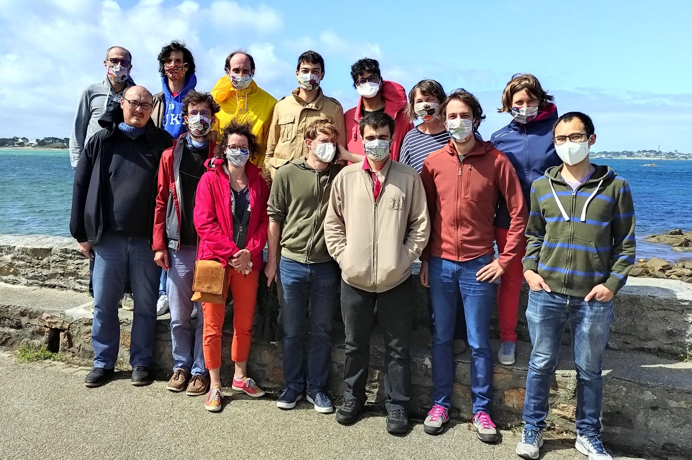

Ateliers Finist’R 2020

L’atelier Finist’R 2020 – ou bootcamp R se tiendra à la station biologique de Roscoff du 24 au 28 août 2020.
Il s’agit de la quatrième édition de l’atelier Finist’R. Cet atelier réunit annuellement un groupe de chercheurs, ingénieurs, doctorants, tous utilisateurs avancés de R et dévelopeurs de paquets pour explorer les dernières fonctionalités du logiciel et les nouvelles pratiques de développement. A l’issu de l’atelier le collectif produit une synthèse de cette veille logiciel de manière à progresser collectivement dans l’utilisation du logiciel mais surtout dans la production d’outils statistiques à destination de la communauté.
La restitution se fait sous forme de site web. Le site de l’édition 2020 sera disponible ici
Participants

Team FinistR2020
- 1er rang: Pierre Navaro, Pierre Gloaguen, Julie Aubert, Julien Chiquet, Baptiste Alglave, Gaspar Massiot, Tam Le Mihn
- 2ème rang: Pierre Neuvial, Pierre Barbillon, Saint-Clair Chabert Liddell, Antoine Bichat, Mahendra Mariadassou, Marie-Pierre Étienne, Sophie Donnet